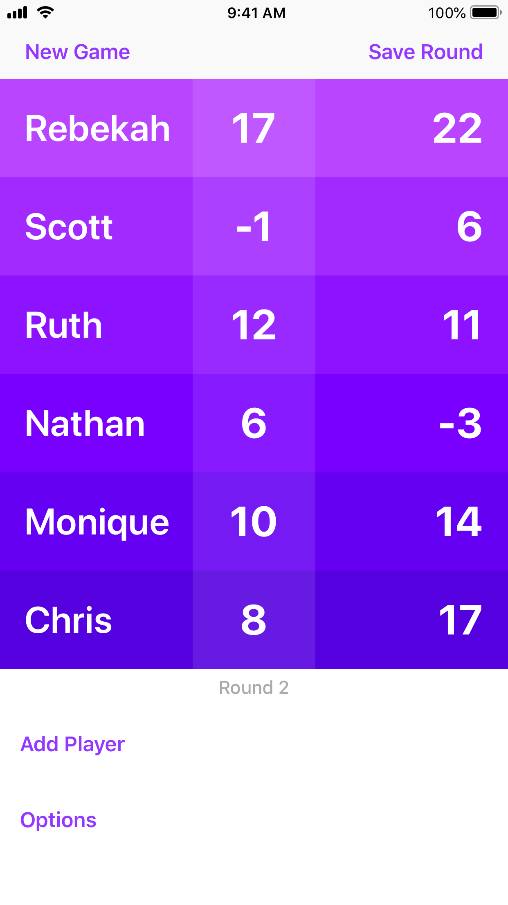

Hate keeping score? Can't find paper? Not a problem!
Scorin' makes keeping score on your iPhone incredibly easy. No pecking away at a keyboard, because Scorin' uses simple gestures to set scores. You'll be able to record the whole table's score in record time! And your game is always saved, so even if you take a break you'll always be able to pick up right where you left off.
- Slide your finger to set scores for each player
- Saves automatically so you'll never lose a score
- Adjustable scoring increments to support a wide range of games
- Easily add and remove players as needed
- No ads
- No In-App Purchases